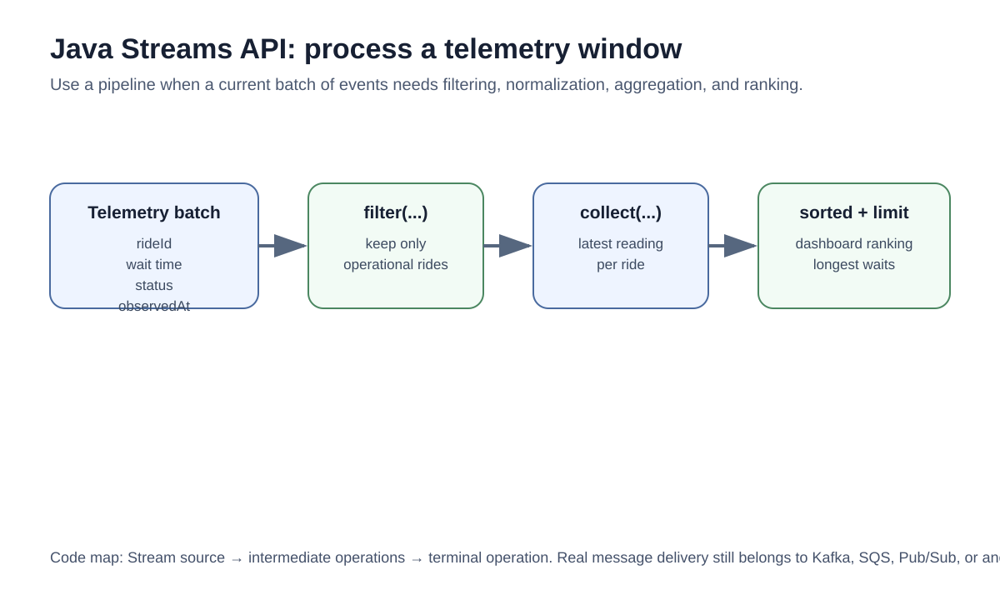
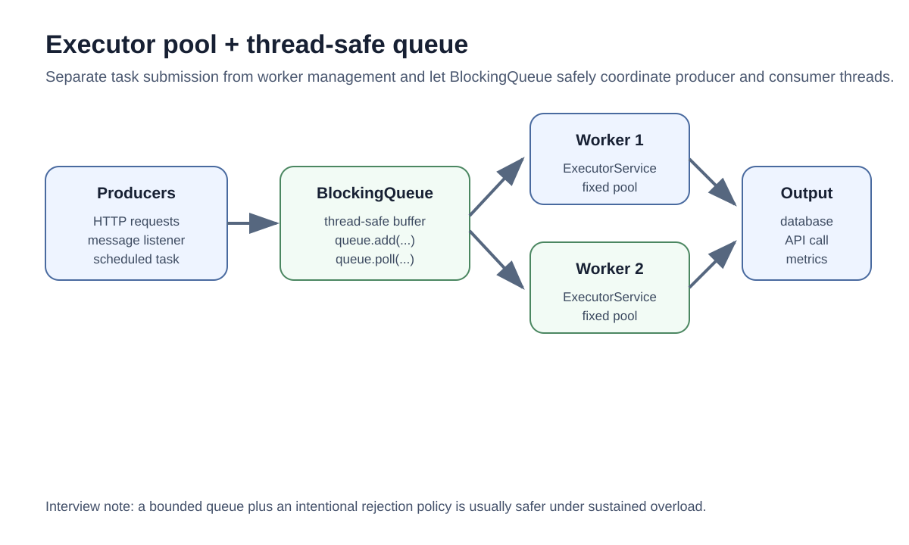
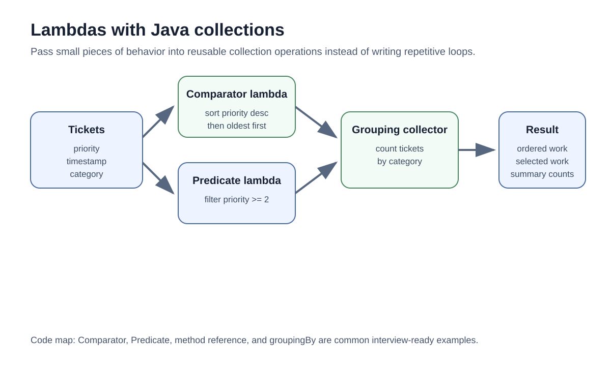
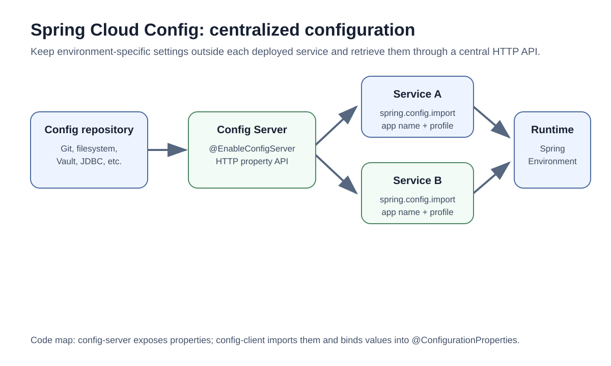
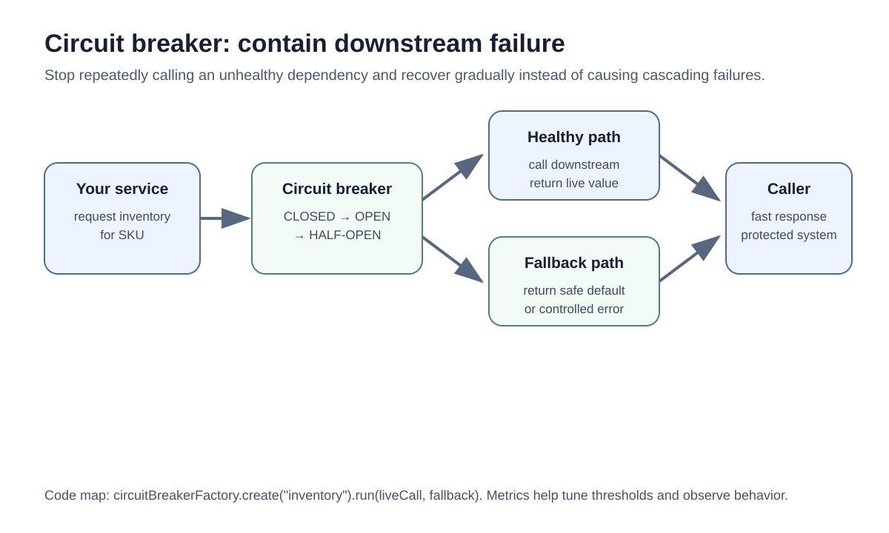
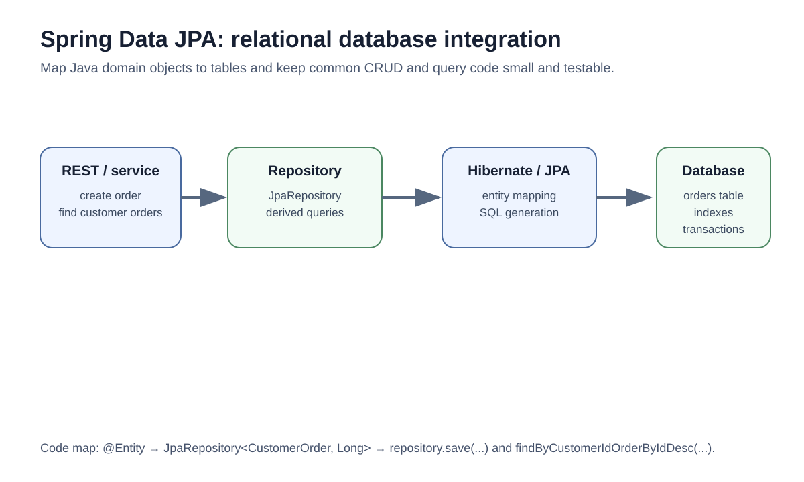

Enterprise Java and Spring Pattern Infographics
Open this file in a browser, then review each diagram beside the matching source code.
1. Java Streams API

2. Executor pool and thread-safe queue

3. Lambdas with collections

4. Spring Cloud Config

5. Circuit breaker

6. Spring Data JPA
